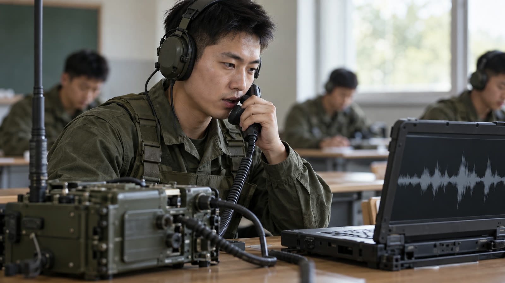
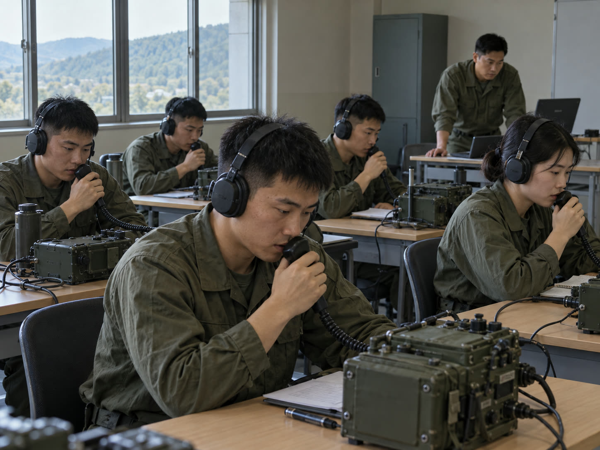
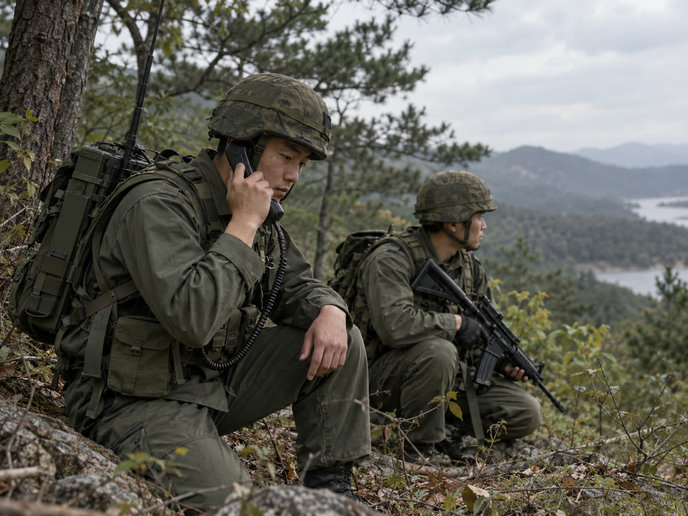
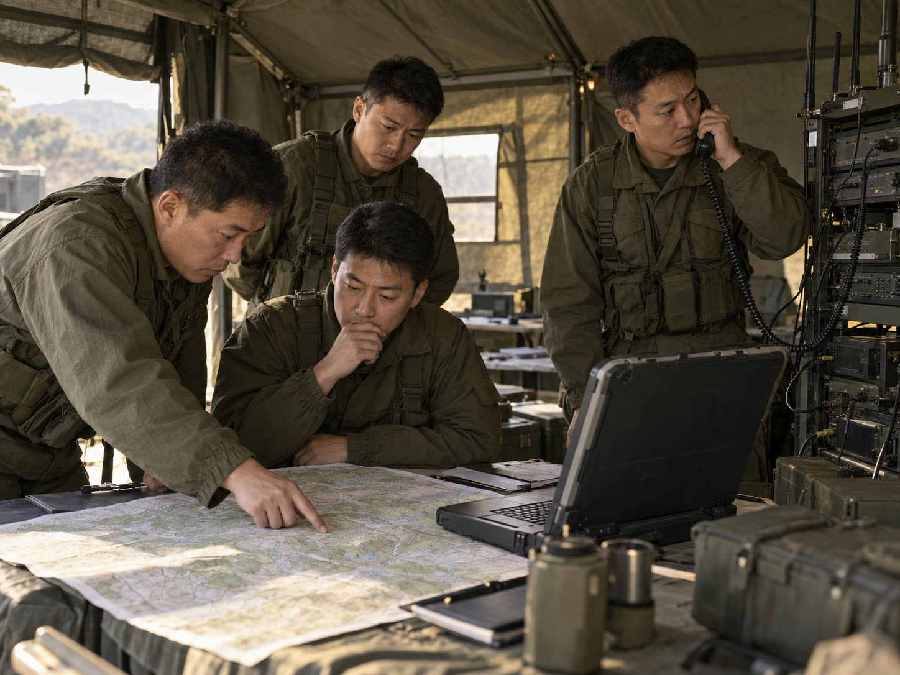

AI 무전 교관
데이터를 만드는 제품
1단계 전장 음성 엔진의 다음 걸음

14:20:05 한빛 송신“상황실, 여기는 한빛. 14시 20분, CH 1234 5678, 적 보병 분대, 북쪽으로 이동 중. 이상.”
부록12345678910111213출처 용어 사전, 1단계 과제 요약, 데이터 근거, 예산 그래프, 시나리오·채점 설계, 지원사업, 리스크 대응표, 출처 전체
1단계 AI 기능검증 서버의 처리 흐름12
19인치 2U 서버 1식, 2026.07.15~12.31. 교환기 스위치의 SPAN 출력을 받는 구조이고, 사람이 승인한 결과를 원음과 함께 저장합니다.1
한국어 군사용어 음성인식, 학습 데이터별 문자 오류율(CER)13
낮을수록 정확. 각 10시간 학습, 같은 평가 데이터
전술 개념이 담긴 교범 데이터를 학습한 모델이 가장 정확했습니다.1
모델은 같아도, 그 분야 데이터를 학습한 쪽이 이겼습니다.
1단계도 승인 파일과 모의 시험망으로 시험하고, 실제 TICN 운용망 연동은 후속 범위로 남겼습니다. 음성·구조화 데이터는 민감정보로 반출을 통제합니다.1
한국어 군사용어 음성인식 연구는 현역 장교 10명이 교범·용어사전·간행물을 읽어 녹음한 음성을 각 10시간씩 학습했습니다.2
KCTC는 영상·음성 등 데이터가 데이터베이스와 백업매체에 흩어져 있고, AI가 학습하도록 정제하는 도구가 없다고 진단했습니다.3
VCM 과제에서도 외부 음원은 이용 조건과 재배포 범위를 먼저 확인하고, 어려우면 라이선스가 명확한 음원을 우선 쓰기로 했습니다.4
필요한 군 음성 데이터는 결국 직접 만들어야 했습니다.
그런 제품이 갖춰야 할 조건을 세 가지로 정했습니다.
사람이 일일이 듣고 받아 적지 않아도 데이터에 정답이 붙어야 합니다.
한 번 쓰고 끝나는 장비가 아니라 반복해서 쓰여야 데이터가 쌓입니다.
운용망에 연결하지 않아도 동작해야 빨리 시작하고 데이터를 모을 수 있습니다.
세 조건에 맞춰 고른 것이 무전 교신 훈련입니다.
육군이 연구하려는 시나리오 자동 생성과 훈련 중 평가·피드백을, 무전 교신 훈련에 먼저 적용하는 제품입니다.
현장 교관의 실제 수요는 아직 직접 확인하지 않았습니다. 확인 계획11
상황실, 사격지휘, 인접부대 역할을 음성으로
절차대로 보고·복창
빠진 항목, 숫자·좌표, 절차, 응답 시간7
교육생별 점수, 반복되는 실수, 녹음 다시 듣기
AI 상황실“한빛, 여기는 상황실. 관측 내용 보고하라. 이상.”
교육생“상황실, 여기는 한빛. 14시 20분, 좌표 CH 1234 5678, 적 보병 분대, 북쪽으로 이동 중. 이상.”
교범을 바탕으로 쓴 상황과 정답 항목
신규음성 합성에 무전기 음질·잡음 효과를 입힘
신규파일, 헤드셋, 무전기 입력
1단계 입력 어댑터Whisper STT와 군 용어·숫자·좌표 보정
1단계 그대로시간, 좌표, 명령, 상황 등으로 구조화
1단계 그대로시나리오 정답과 항목 단위로 비교
신규원음, 결과, 교관 확인 이력을 통화 단위로
1단계 DB·승인 이력1단계 서버는 인터넷 API 없이 온프레미스로 동작하도록 설계돼 있습니다.1 AI 무전 교관도 같은 구조를 씁니다.2 채점 방식7
녹음 수집, 사람이 듣고 받아 적기, 검수, 학습.
앞 장처럼 군 음성은 녹음부터 직접 만들어야 했습니다.
시나리오를 우리가 쓰므로 정답이 이미 있습니다. 교육생이 말하는 순간 정답이 붙은 음성으로 저장됩니다.
사람 손이 가는 건 애매한 판정의 교관 확인뿐입니다.
1단계 신청서도 저장한 원음·보정문·7필드를 2단계 학습·평가 데이터로 쓰는 계획입니다.112
교육 환경과 전장의 음질 차이는 무전기 음질·잡음 합성으로 보완할 계획입니다.11
있습니다. 무기체계 세부분류에 ‘그 밖의 무기체계 > 국방M&S체계 > 전술훈련모의장비’가 있습니다.1 실제 분류 판단은 신속원이 합니다.9
해당합니다. 신속시범사업 공모 분야인 10대 국방전략기술에 인공지능이 있습니다.2
있습니다. 국방부 ‘AI 기반 VR·MR 대드론 훈련 시뮬레이터 개발 및 신속상용화 지원사업’, 12개월, 정부지원금 20억 원.310
있습니다. 캐나다군 JTAC 음성인식 VR 훈련 연구4, 교육생 교신을 정확성·간결성·완결성으로 채점하는 관제사 훈련 시뮬레이터 ASTRA.58

AI 무전 교관

KCTC 무전 블랙박스

무전에서 C4I 보고로
시점은 가안입니다. 사진은 AI 생성 이미지(Codex)이며 실제 장면이 아닙니다.12
MVP 범위
일정
자금 창구: K-방산 2단계(2027, 기업당 최대 5억 원3), 신속시범사업, 국방부 신속상용화10
K-방산 스타트업 1단계 육성사업 과제 신청서(제출본) 기준
과제명: 전장 음성 데이터화 모듈 시제품 제작 기반 선행연구
기간: 2026.07.15~12.31 (5개월)
사업비: 총 80백만 원 (정부 60, 현금 2, 현물 18)
결과물: 19인치 2U AI 기능검증 서버 1식
GPU VRAM 48GB 이상, RAM 64GB 이상, 저장장치 8TB 이상
10GbE SFP+ 수집 포트 2, 1GbE RJ45 관리 포트 2, 수집망·관리망 분리
| KPI | 목표 | 비중 |
|---|---|---|
| 핵심 개체 인식 (군 용어, 숫자, 좌표, 호출부호) | baseline 대비 오류 20% 이상 감소, 과보정률 3% 이하 | 20 |
| STT 원문 정확도 (CER) | baseline 대비 5% 이상 감소 | 15 |
| 7필드 분류 정확도 (Macro F1) | 70% 이상 | 35 |
| 구간별 처리 지연 | 발화 종료 후 5초 이내 (P95) | 20 |
| 결과 추적성 | 90% 이상 | 10 |
V-01 한국어 군용 음성 인식 오류 유형 보고서, V-02 음질·소음 조건별 저하 요인, V-03 구간별 처리지연, V-04 7필드 정의 및 성능, V-05 GCS 대시보드 UI, V-06 2단계 성능지표 후보 및 실증방식
신청서: 1단계 기능검증 서버, 2단계 보안형 전술 음성 의사결정 지원 AI 서버, 3단계 TICN 운용환경 실증형 전술 음성 AI 서버. 7/20 회의: 2단계는 실제 국방 단말 연동, 3단계는 다단말·대용량 처리로 강화.
| 연구 | 대상 | 결과 (원문 확인) | 시사점 |
|---|---|---|---|
| 국방대학교 차현우·마정목 (2024)1 | 한국어 군사용어 | 현역 장교 10명이 교범·용어사전·간행물을 읽어 녹음한 음성으로 Whisper를 각 10시간 학습. CER: 기존 13.68%, 용어사전 12.36%, 간행물 8.42%, 교범 7.94%. 군사용어는 특수 용어가 많아 추가 학습이 필요하다고 밝힘 | 전술 맥락이 담긴 데이터가 성능을 가장 크게 올림 |
| Embry-Riddle 항공대 (2026)2 | 항공 무선 교신 (미국 12개 공항) | 시판 STT 단어 오류율 80%, 맞춤화 후 15% 미만. 용어 표준화, 호출부호·숫자 정리, 교신 오류 식별 포함 | 도메인 맞춤이 성능 차이를 만듦 |
| ASTRA (2026, arXiv)3 | 관제사 훈련 (싱가포르) | 시판 모델 단어 오류율 최대 107.80%, 맞춤 학습 후 23.45%. 교육생 교신을 정확성·간결성·완결성으로 채점 | 교신 훈련 자동 채점은 연구로 시도된 방향 |
| HAAWAII, DLR·Idiap 등 (2021)4 | 항공관제 복창 | 단어 단위 대조는 매우 비효율적이었고, 의미(개념) 단위 대조가 오인식에도 더 견고 | 7필드처럼 항목 단위로 채점 |
| 경로 | 확인한 내용 |
|---|---|
| 실전 무전 | 1단계는 승인 파일과 가상 SIP/RTP 시험망이 기본 입력이고, 교환기 SPAN 입력은 승인된 시험환경이 확보될 때만 시험. 실제 TICN 운용망 직접 연동은 후속 범위. 음성·구조화 데이터는 민감정보로 보고 암호화·접근권한·반출통제를 정의1 |
| 연구용 데이터 | 국방 표준 자연어 데이터셋 구축사업으로 구축한 데이터로, 현역 장교 10명(육군 소령 2, 육군 대위 3, 해군 대위 2, 공군 대위 2, 해병 대위 1)이 군사 교범·용어사전·간행물을 읽어 녹음2 |
| KCTC | ‘AI 활용 KCTC 훈련체계 발전 연구’ 용역 발주. 교전 데이터, 장병 위치, 사격 기록, 영상·음성 등이 데이터베이스와 백업매체에 흩어져 있고 AI 학습용 정제 도구가 없음3 |
| 국방 차원 | 국방AI데이터센터 구축 정보화전략계획(ISP) 사전규격 공개. 각 군과 기관에 흩어진 데이터를 ‘국방AI데이터허브’로 수집·저장·품질관리하는 구상4 |
| 사내 경험 | VCM 과제: 외부 출처 음원은 이용 조건과 재배포 범위를 먼저 확인하고, 어려우면 라이선스가 명확한 음원을 우선 사용5 |
AI 관련 국방예산, 2026년 대비 2027년 정부안 (억 원)1
방산 수출 수주액 (억 달러)2
2026년은 7월 말까지 누계라 다른 해와 바로 비교할 수 없습니다(빗금).
| 항목 | 내용 |
|---|---|
| 국방예산 | 2026년 65조 8,642억 원 확정3. 2027년 정부안 73조 2,777억 원(전년 대비 8.2%, 총지출 기준)으로 처음 70조 원 돌파1 |
| AI·무인 | 피지컬 AI 실증 430억 원 신규1. 교육용 상용드론 1만7000여 대 구매에 500억 원4 |
| 국방 AX | 10/22 국방인공지능 추진평가 회의. 비전 ‘소버린 AI 기반의 자주적 첨단강군 건설’. 거점 5곳: 합참 용산(지휘통제 AI), 육군 판교(피지컬 AI), 대전(에이전틱 AI), 해군·해병대 부산(해양 AX), 공군 양재(항공우주 AX)5 |
| 지휘통제 | KCCS 3단계 추진 예정, 초거대 인공지능 기반 지휘통제체계 기술 개발 사업 242억 원(2026.9~2030.2, 42개월)6. KJCCS 경미한 성능개량(460억 3,500만 원) 우선협상대상자 LIG시스템 컨소시엄, 삼성SDS 합류7 |
| 스타트업 | 2030년까지 방산 참여 스타트업 100개 사 육성 목표8 |
채점 항목은 1단계 7필드에 맞춰 설계합니다. 실제 보고 양식과 용어는 교범과 과제책임자 검수로 확정합니다.
| MVP 시나리오 | 역할 | 정답으로 둘 7필드 (설계안) |
|---|---|---|
| 정찰 보고 | 교육생: 정찰조 AI: 중대 상황실 | 시간, 좌표, 상황, 표적명, 자산명 |
| 화력 요청 | 교육생: 관측자 AI: 사격지휘 | 좌표, 표적명, 명령, AI 지시 복창 |
| 의무후송 요청 | 교육생: 소대 AI: 대대 상황실 | 좌표, 상황, 부대명, 시간 |
AI 상황실“한빛, 여기는 상황실. 관측 내용 보고하라. 이상.” 교육생“상황실, 여기는 한빛. 14시 20분, 좌표 CH 1234 5678, 적 보병 분대, 북쪽으로 이동 중. 이상.”
| 항목 | 무엇을 보나 | 어떻게 판정하나 | 1단계에서 가져오는 것 |
|---|---|---|---|
| 필수 항목 완결성 | 시나리오가 요구한 항목이 다 나왔나 | 7필드 추출 결과를 시나리오 정답 항목과 비교 | 7필드 구조화 모듈 |
| 숫자·좌표 정확도 | 시간, 좌표, 수량이 맞나 | 표기를 정규화한 뒤 정답과 일치 여부 비교 | 숫자·좌표 정규화 규칙 |
| 복창 정확도 | AI 지시를 맞게 되받았나 | 단어가 아니라 항목(의미) 단위로 대조1 | 군 용어·문맥 보정 |
| 절차 준수 | 호출부호, 시작·종료 용어의 순서 | 규칙 기반 검사 | 군 용어 사전 |
| 응답 시간 | 호출부터 응답까지 | 발화 시작·종료 타임스탬프 | 구간별 처리지연 측정 |
| 간결성 | 필요한 말만 했나 | 발화 길이 대비 필수 항목 비율2 | 없음 (신규) |
확신이 낮은 판정은 자동으로 확정하지 않고 교관 확인으로 넘깁니다. 1단계의 ‘모델 출력은 사람이 승인한다’ 원칙과 같습니다.3 항목별 배점은 교관 인터뷰 후 정합니다.
음성인식으로 교신 절차를 훈련하거나 채점한 사례와, 국내 AI 훈련 시뮬레이터 예산 선례입니다.
| 사례 | 누가·언제 | 내용 (원문 확인) | 우리와 다른 점 |
|---|---|---|---|
| JTAC VR 훈련기1 | Calian, 캐나다군 (국가연구위원회가 연구 지원) | 음성인식과 VR을 결합. 교육생이 외워야 하는 화력 요청 무전 절차를 훈련하고, 교육생의 음성 응답을 인식 | 항공 화력 유도 한정, 영어 |
| ASTi SERA2 | 미 해안경비대, 2020년 발표 | MH-65E 조종석 절차 훈련기에 AI 역할자를 통합할 예정이며, 맞춤 무선 용어에 맞게 음성인식을 수정 | 항공 교신, 도입 예정 발표 기준 |
| ASTRA3 | 연구, 2026.06 | 관제사 훈련의 조종사 역할을 자동화. 교육생 교신을 정확성·간결성·완결성으로 평가 | 연구 단계, 항공 관제 |
| AI 대드론 훈련 시뮬레이터4 | 버넥트 컨소시엄, 2026.10 | 국방부 개발 및 신속상용화 지원사업. 12개월, 정부지원금 20억 원. 500MB 이하 경량 AI 모델을 현장 PC에서 실행 | VR·MR 대드론 훈련, 음성 교신 아님 |
국방전력발전업무훈령 별표 4 「무기체계 세부분류」 발췌
10. 그 밖의 무기체계 > 국방M&S체계 > 전술훈련모의장비
K계열전차소부대전술모의훈련장비, P-3 및 Lynx/AW-159모의훈련장비, 전투기·수송기·훈련기 모의비행훈련장비, 비행환경적응훈련장비, 전자전훈련장비, 공중전투기동훈련체계 등
신속시범사업은 무기체계로 분류 가능한 시제품만 대상이며, 판단은 신속원이 합니다. 수요신청서 제출 전 사전 문의를 권합니다.
1. 지휘통제·통신 > 지휘통신체계 > 전술통신체계: 전술지휘통신체계(SPIDER), 전술정보지휘통신체계(TICN) 등
1. 지휘통제·통신 > 통신장비 > 그 밖의 통신장비: 정보·보안장비 등
비고: 무기체계의 구성장비인 상용정보통신장비는 무기체계로 분류
인공지능, 유·무인 복합, 양자, 우주, 에너지, 첨단소재, 사이버·네트워크, 센서·전자기전, 추진, WMD 대응
참고: 지휘통제정보공유체계(R&D) 예비설명회 11/24 과천. 참석 신청은 10/16 마감6
| 리스크 | 영향 | 확인·대응 방법 | 담당(안) | 시점(안) |
|---|---|---|---|---|
| 실제 수요 | 사업성 전체 | 정보통신학교·부대 교관 인터뷰 3건. 확인 항목: 상대역 부담, 채점 방식, 기록 여부, 연간 교육 인원 | 미정 (오늘 결정) | 11월 둘째 주 |
| 시나리오 품질 | 채점 신뢰도 | 교범 기반 초안, 과제책임자 검수, 교관 리뷰 3단계 | 과제책임자 | MVP 착수 전 |
| 교육생 발화 인식 | 오채점 | 내부 인원 10명 녹음 시험, 항목 단위 대조, 확신 낮은 판정은 교관 확인 | 음성 담당 | MVP 개발 중 |
| 지원사업 경로 | 자금 | 경북창경에 2단계 방향 변경 가능 여부 문의. 안 되면 신속시범·신속상용화 | 미정 | 11월 첫째 주 |
| 무기체계 분류 | 신속시범 자격 | 신속원 신속획득연구팀 사전 문의 | 미정 | 11/17 이전 |
| 교범 보안 | 시나리오 범위 | 공개 범위로 MVP를 만들고, 비공개 시나리오는 고객이 현장 내부망에서 직접 작성하는 구조 | 설계 담당 | 설계 단계 |
| 음질 차이 | 실전 적용 시 성능 | 무전기 음질·전장 잡음 합성으로 증강. 훈련장 단계에서 실제 훈련 무전으로 보강 | 음성 담당 | MVP 이후 |
| 인력 병행 | 1단계·타 과제 지연 | 11~12월은 확인·시나리오 작업만, 개발은 1단계 종료 후 | PM | 상시 |
| 단계 | 고객 | 쌓이는 데이터 | 추가 기술 | 연결되는 근거 |
|---|---|---|---|---|
| 1 교육장 AI 무전 교관 | 정보통신학교, 부대 교육 | 정답 붙은 군 음성, 교육생 실수 유형 | 시나리오 엔진, AI 역할자 음성, 채점기 | 1단계 저장 데이터를 2단계 학습·평가에 쓰는 계획1 |
| 2 훈련장 KCTC 무전 블랙박스 | KCTC, 과학화훈련장 | 실제 훈련 무전, 교전 타임라인 | 다채널 처리, 교전 데이터 결합, 사후강평 리포트 | KCTC ‘AI 활용 훈련체계 발전 연구’, 훈련 종료와 동시에 사후검토 제공 방안 연구 예정2. KCTC 성능개량은 아이티센엔텍 주관 486억 원 계약3 |
| 3 실전 무전에서 C4I 보고로 | 지휘소, C4I 체계업체 | 보안망 안의 실전 무전 | 보안 인증, C4I 메시지 연동 | 1단계 로드맵의 3단계 TICN 운용환경 실증1 |
교육장의 정답 데이터로 다듬은 인식·채점 모델이 훈련장 무전의 1차 라벨러가 되고, 훈련장의 실제 무전은 실전 모델의 학습 재료가 됩니다.
모든 단계에서 모델 출력은 사람이 승인하고, 자동 명령 생성·수행은 포함하지 않습니다.1
기준 5개: 정답 데이터를 우리가 만드는가(1순위), 1단계 자산 재활용, 시장·예산, 경쟁, 첫 데모까지 속도
| 후보 | 결과 | 사유 |
|---|---|---|
| AI 무전 교관 | 선정 | 정답 데이터를 우리가 만듦, SW만 추가 |
| KCTC 무전 블랙박스 | 확장 2단계 | KCTC 데이터에 의존, 교관 다음 단계로 |
| 무전에서 C4I 보고 자동화 | 확장 3단계 | 보안·인증 장벽이 가장 높음 |
| 음향 드론 탐지망 | 별도 검토 | 하드웨어 개발이 필요하고 1단계 자산 재활용이 낮음 |
| 음성 지휘 드론 GCS | 보류 | 드론 기체 협력이 필요 |
| 통신보안 위반 자동 탐지 | 보류 | 판단 근거 부족 |
| 딥페이크 지휘 음성 탐지 | 제외 | 화자마다 등록 데이터 필요 |
| 군 비행장 복창 오류 감시 | 제외 | 실제 기체 데이터와 대조 필요 |
| 최종 3개 비교 | 교관 | 블랙박스 | 드론 탐지 |
|---|---|---|---|
| 데이터 자체 생성 | ●●● | ●○○ | ●●○ |
| 자산 재활용 | ●●● | ●●● | ●●○ |
| 시장·예산 | ●●○ | ●○○ | ●●● |
| 데모 속도 | ●●● | ●●○ | ●○○ |